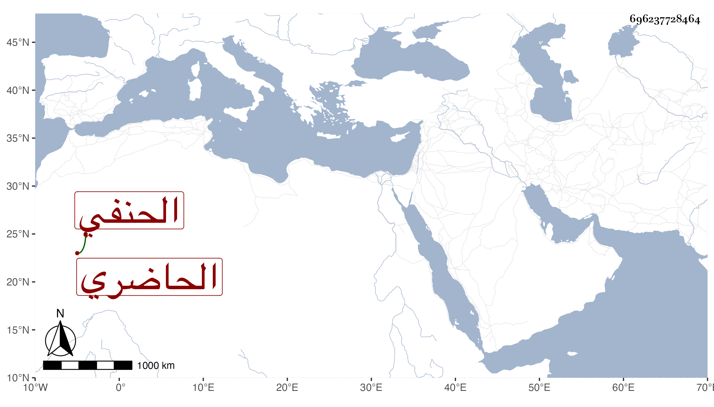

0902Sakhawi.DawLamic.ITO20230111-ara1.EIS1600.696237728464
Biography ID: 696237728464
724
علي بن حسين ورأيته في غير موضع بالتكبير ابن علي نور الدين الحاضري الحنفي . ولد في جمادى الأولى سنة خمس وخمسين وسبعمائة واشتغل وأجاز له العز عبد العزيز بن جماعة وباشر عدة وظائف سلطانية منها شهادة الديوان المفرد رفيقا للتاج بن كاتب المناخات وأهين في دولة منطاش ونفي ثم عظم لما عاد الظاهر وتولى ابن أخته بيبرس الدوادارية ، وكان كثير التودد طلق الوجه حسن العشرة . مات في عشري شعبان سنة اثنتين وثلاثين وقد شاخ ورق حاله ، وممن أخذ عنه البدر الدميري وذكره شيخنا في إنبائه باختصار وهو في عقود المقريزي وقال أنه أنشده قال : أنشدني طاهر بن حبيب وذكر من نظمه .
